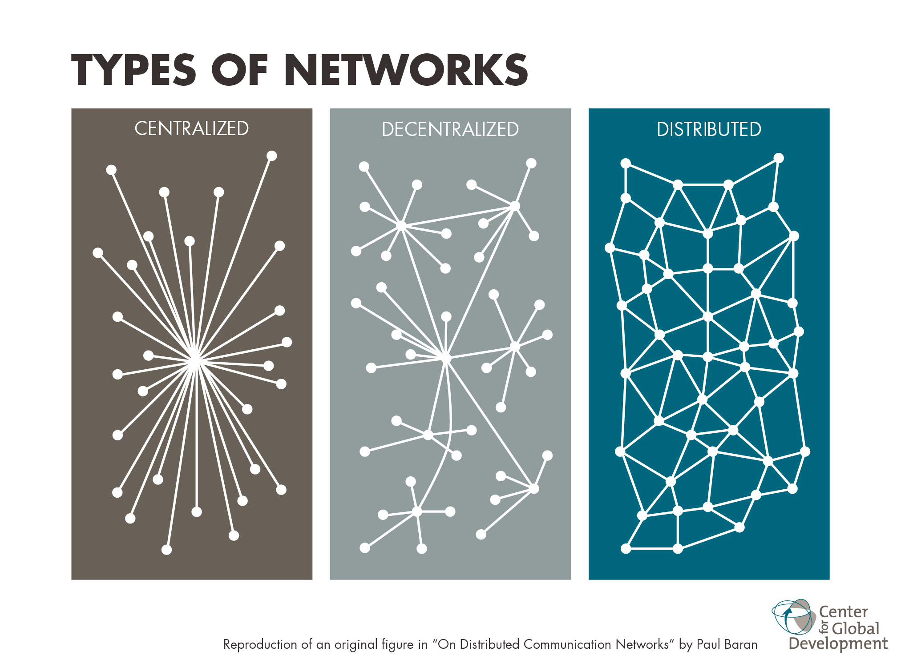

Blockchain Python
Ou comment ne pas devenir riche en réinventant la roue
Formation CSlabs - Jérôme Fink
Menu du jour
- Que fait la blockchain ?
- Notre blockchain en python
Que fait la blockchain ?
Base de données hautement distribuée
Persistance

Consensus
- Quelle version de la DB conserver ?
- Est-ce que mes voisins essaient de tricher ?
Notre proto-blockchain

Pistes d'amélioration
- Vérifier si les transactions présents dans les blocks sont valides
- Prévoir une façon de rémunérer les mineurs
- Mettre un peu plus de "random" dans la manière dont est calculée la proof of work
Regard critique sur la blockchain
- La proof of work utilise du temps de calcul pour pas grand chose
- Gros trafic réseau
- Offre plein de possibilités ! (Mais trop de hype autour de la techno)
- Il faut beaucoup d'utilisateurs pour avoir un réseau solide